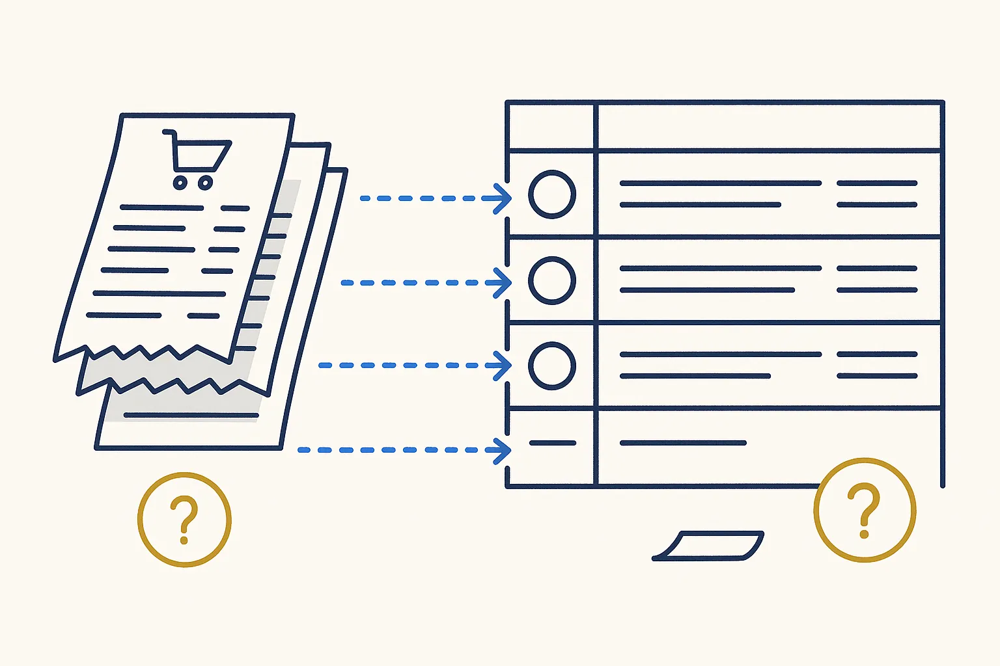

Paperless-ngx
Self-hosted document system: scans and PDFs go in, come out searchable, tagged and filed. Invoices and contracts on your own server instead of in a cloud.
Paperless-ngx

What it is
Paperless-ngx is an open-source document system that you run on your own server or NAS. You drop a scan or a PDF into a folder; it reads the text (OCR), suggests tags, a correspondent and a document type, and makes everything searchable in full text.
How I use it
It runs on my home server since August 2026. My documents stay in the vault as plain files, filed by day; Paperless gets a copy to make them searchable. A small script keeps a ledger of what was sent in, so nothing is sent twice and nothing goes missing without notice. Digital PDFs, such as invoices from an accounting package, already have a text layer, so Paperless skips the OCR and they cost almost nothing to process.
On a Build Day
For a small company this is often the clearest first win: invoices, contracts and letters on your own hardware, searchable in seconds, without a monthly subscription or a document cloud.
Watch out
An import that stops does not announce itself. Count what went in against what arrived, as the use case on this page does, instead of assuming the folder emptied because it worked.
Links
Concepts behind it
- Document Vault — Plain files in a deliberate shape that both you and AI can navigate.
- Rules You Can Verify — '2-space indent' is a rule; 'format code properly' is a wish. A rule the system can't check is decoration.
- Silence Is Not Absence of Failure — No complaints does not mean no problems. It usually means people adapted to the errors and stopped mentioning them.
Used in these use cases
 Document intake that keeps its own receiptsFeeding thousands of documents into a document system, with a ledger that proves what arrived, avoids duplicates, and re-reads the badly recognised ones.
Document intake that keeps its own receiptsFeeding thousands of documents into a document system, with a ledger that proves what arrived, avoids duplicates, and re-reads the badly recognised ones. From phone scan to the right folder, named and indexedA scan on the phone arrives in an inbox folder; one instruction routes it to its proper place, with a proper name and a metadata file.
From phone scan to the right folder, named and indexedA scan on the phone arrives in an inbox folder; one instruction routes it to its proper place, with a proper name and a metadata file.
Every booking linked to its scanScans carry date, vendor and amount in a small metadata file; bookings come from the accounting export. A match on date and amount links them, and two short lists show what is missing on either side.in progressRelated articles
- A Proof of Concept Is Not a Product — and That Is the Point
- Red-Team Your Own AI (Before It Just Flatters You) — Structure Beats Magic
- Sidecar Markdown — Giving a PDF the Thing It Can Never Have — Structure Beats Magic
- Context Engineering for One — Structure Beats Magic
More in Self-hosted tools
 DawarichDawarichSelf-hosted location history, an alternative to Google Timeline. Where you were becomes data you own.Read more →
DawarichDawarichSelf-hosted location history, an alternative to Google Timeline. Where you were becomes data you own.Read more → ImmichImmichSelf-hosted photo and video library, a Google Photos alternative on your own server. I let it read my photo folders without owning them.Read more →
ImmichImmichSelf-hosted photo and video library, a Google Photos alternative on your own server. I let it read my photo folders without owning them.Read more → SyncthingThe Syncthing FoundationContinuous file sync between your own devices, without a cloud in between. How scans and photos get from my phone to the right folder.Read more →
SyncthingThe Syncthing FoundationContinuous file sync between your own devices, without a cloud in between. How scans and photos get from my phone to the right folder.Read more →